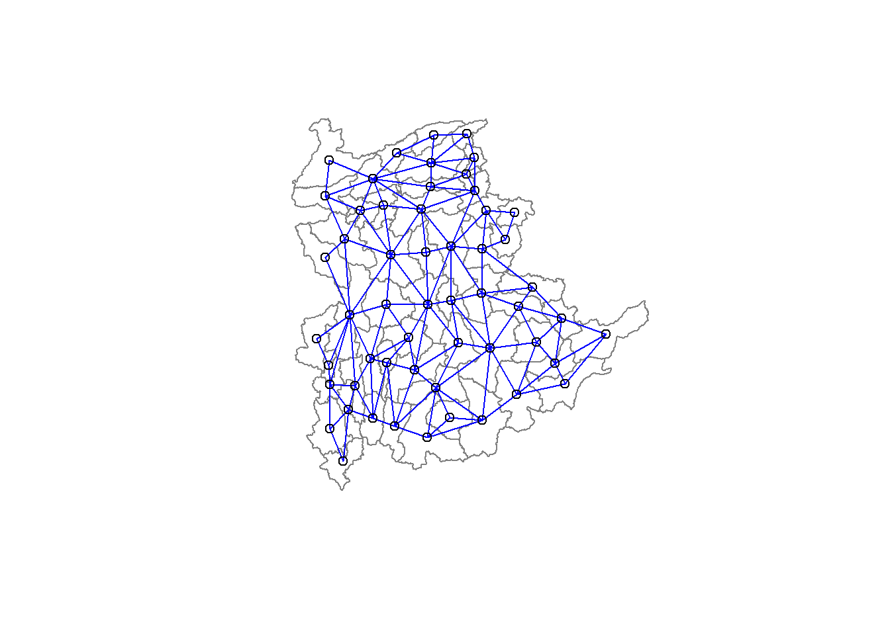

pacman::p_load(spdep, tmap, sf, ClustGeo,
ggpubr, cluster, factoextra, NbClust,
heatmaply, corrplot, psych, tidyverse, GGally)Geographical Segmentation with Spatially Constrained Clustering Techniques
Hands-On Exercise 07
1.0 Context
This will be a continuation of Hands-On Ex07.
2.0 Spatially Constrained Clustering: SKATER approach
In this section, you will learn how to derive spatially constrained cluster by using skater() method of spdep package.
2.1 Converting into SpatialPolygonsDataFrame
First, we need to convert shan_sf into SpatialPolygonsDataFrame. This is because SKATER function only support sp objects such as SpatialPolygonDataFrame.
The code chunk below uses as_Spatial() of sf package to convert shan_sf into a SpatialPolygonDataFrame called shan_sp.
shan_sp <- as_Spatial(shan_sf)2.2 Computing Neighbour List
Next, poly2nd() of spdep package will be used to compute the neighbours list from polygon list.
shan.nb <- poly2nb(shan_sp)
summary(shan.nb)Neighbour list object:
Number of regions: 55
Number of nonzero links: 264
Percentage nonzero weights: 8.727273
Average number of links: 4.8
Link number distribution:
2 3 4 5 6 7 8 9
5 9 7 21 4 3 5 1
5 least connected regions:
3 5 7 9 47 with 2 links
1 most connected region:
8 with 9 linksWe can plot the neighbours list on shan_sp by using the code chunk below. Since we now can plot the community area boundaries as well, we plot this graph on top of the map. The first plot command gives the boundaries. This is followed by the plot of the neighbor list object, with coordinates applied to the original SpatialPolygonDataFrame (Shan state township boundaries) to extract the centroids of the polygons. These are used as the nodes for the graph representation. We also set the color to blue and specify add=TRUE to plot the network on top of the boundaries.
coords <- st_coordinates(
st_centroid(st_geometry(shan_sf)))plot(st_geometry(shan_sf),
border=grey(.5))
plot(shan.nb,
coords,
col="blue",
add=TRUE)
Note that if you plot the network first and then the boundaries, some of the areas will be clipped. This is because the plotting area is determined by the characteristics of the first plot. In this example, because the boundary map extends further than the graph, we plot it first.
2.3 Computing minimum spanning tree
2.3.1 Calculating edge costs
Next, nbcosts() of spdep package is used to compute the cost of each edge. It is the distance between it nodes. This function compute this distance using a data.frame with observations vector in each node.
The code chunk below is used to compute the cost of each edge.
lcosts <- nbcosts(shan.nb, shan_ict)For each observation, this gives the pairwise dissimilarity between its values on the five variables and the values for the neighbouring observation (from the neighbour list). Basically, this is the notion of a generalised weight for a spatial weights matrix.
Next, We will incorporate these costs into a weights object in the same way as we did in the calculation of inverse of distance weights. In other words, we convert the neighbour list to a list weights object by specifying the just computed lcosts as the weights.
In order to achieve this, nb2listw() of spdep package is used as shown in the code chunk below.
Note that we specify the style as B to make sure the cost values are not row-standardised.
shan.w <- nb2listw(shan.nb,
lcosts,
style="B")
summary(shan.w)Characteristics of weights list object:
Neighbour list object:
Number of regions: 55
Number of nonzero links: 264
Percentage nonzero weights: 8.727273
Average number of links: 4.8
Link number distribution:
2 3 4 5 6 7 8 9
5 9 7 21 4 3 5 1
5 least connected regions:
3 5 7 9 47 with 2 links
1 most connected region:
8 with 9 links
Weights style: B
Weights constants summary:
n nn S0 S1 S2
B 55 3025 76267.65 58260785 5220160042.4 Computing minimum spanning tree
The minimum spanning tree is computed by mean of the mstree() of spdep package as shown in the code chunk below.
shan.mst <- mstree(shan.w)After computing the MST, we can check its class and dimension by using the code chunk below.
class(shan.mst)[1] "mst" "matrix"dim(shan.mst)[1] 54 3Note that the dimension is 54 and not 55. This is because the minimum spanning tree consists on n-1 edges (links) in order to traverse all the nodes.
We can display the content of shan.mst by using head() as shown in the code chunk below.
head(shan.mst) [,1] [,2] [,3]
[1,] 17 54 109.08506
[2,] 54 48 47.79331
[3,] 54 45 127.42203
[4,] 45 52 146.78891
[5,] 52 13 110.55197
[6,] 13 28 92.79567The plot method for the MST include a way to show the observation numbers of the nodes in addition to the edge. As before, we plot this together with the township boundaries. We can see how the initial neighbour list is simplified to just one edge connecting each of the nodes, while passing through all the nodes.
plot(st_geometry(shan_sf),
border=gray(.5))
plot.mst(shan.mst,
coords,
col="blue",
cex.lab=0.7,
cex.circles=0.005,
add=TRUE)
2.5 Computing spatially constrained clusters using SKATER method
The code chunk below compute the spatially constrained cluster using skater() of spdep package.
clust6 <- spdep::skater(edges = shan.mst[,1:2],
data = shan_ict,
method = "euclidean",
ncuts = 5)The skater() takes three mandatory arguments: - the first two columns of the MST matrix (i.e. not the cost), - the data matrix (to update the costs as units are being grouped), and - the number of cuts. Note: It is set to one less than the number of clusters. So, the value specified is not the number of clusters, but the number of cuts in the graph, one less than the number of clusters.
The result of the skater() is an object of class skater. We can examine its contents by using the code chunk below.
str(clust6)List of 8
$ groups : num [1:55] 3 3 6 3 3 3 3 3 3 3 ...
$ edges.groups:List of 6
..$ :List of 3
.. ..$ node: num [1:22] 13 48 54 55 45 37 34 16 25 52 ...
.. ..$ edge: num [1:21, 1:3] 48 55 54 37 34 16 45 25 13 13 ...
.. ..$ ssw : num 3423
..$ :List of 3
.. ..$ node: num [1:18] 47 27 53 38 42 15 41 51 43 32 ...
.. ..$ edge: num [1:17, 1:3] 53 15 42 38 41 51 15 27 15 43 ...
.. ..$ ssw : num 3759
..$ :List of 3
.. ..$ node: num [1:11] 2 6 8 1 36 4 10 9 46 5 ...
.. ..$ edge: num [1:10, 1:3] 6 1 8 36 4 6 8 10 10 9 ...
.. ..$ ssw : num 1458
..$ :List of 3
.. ..$ node: num [1:2] 44 20
.. ..$ edge: num [1, 1:3] 44 20 95
.. ..$ ssw : num 95
..$ :List of 3
.. ..$ node: num 23
.. ..$ edge: num[0 , 1:3]
.. ..$ ssw : num 0
..$ :List of 3
.. ..$ node: num 3
.. ..$ edge: num[0 , 1:3]
.. ..$ ssw : num 0
$ not.prune : NULL
$ candidates : int [1:6] 1 2 3 4 5 6
$ ssto : num 12613
$ ssw : num [1:6] 12613 10977 9962 9540 9123 ...
$ crit : num [1:2] 1 Inf
$ vec.crit : num [1:55] 1 1 1 1 1 1 1 1 1 1 ...
- attr(*, "class")= chr "skater"The most interesting component of this list structure is the groups vector containing the labels of the cluster to which each observation belongs (as before, the label itself is arbitary). This is followed by a detailed summary for each of the clusters in the edges.groups list. Sum of squares measures are given as ssto for the total and ssw to show the effect of each of the cuts on the overall criterion.
We can check the cluster assignment by using the conde chunk below.
ccs6 <- clust6$groups
ccs6 [1] 3 3 6 3 3 3 3 3 3 3 2 1 1 1 2 1 1 1 2 4 1 2 5 1 1 1 2 1 2 2 1 2 2 1 1 3 1 2
[39] 2 2 2 2 2 4 1 3 2 1 1 1 2 1 2 1 1We can find out how many observations are in each cluster by means of the table command. Parenthetially, we can also find this as the dimension of each vector in the lists contained in edges.groups. For example, the first list has node with dimension 12, which is also the number of observations in the first cluster.
table(ccs6)ccs6
1 2 3 4 5 6
22 18 11 2 1 1 Lastly, we can also plot the pruned tree that shows the five clusters on top of the townshop area.
plot(st_geometry(shan_sf),
border=gray(.5))
plot(clust6,
coords,
cex.lab=.7,
groups.colors=c("red","green","blue", "brown", "pink"),
cex.circles=0.005,
add=TRUE)2.6 Visualising the clusters in choropleth map
The code chunk below is used to plot the newly derived clusters by using SKATER method.
groups_mat <- as.matrix(clust6$groups)
shan_sf_spatialcluster <- cbind(shan_sf_cluster, as.factor(groups_mat)) %>%
rename(`SP_CLUSTER`=`as.factor.groups_mat.`)
qtm(shan_sf_spatialcluster, "SP_CLUSTER")
For easy comparison, it will be better to place both the hierarchical clustering and spatially constrained hierarchical clustering maps next to each other.
hclust.map <- qtm(shan_sf_cluster,
"CLUSTER") +
tm_borders(alpha = 0.5)
shclust.map <- qtm(shan_sf_spatialcluster,
"SP_CLUSTER") +
tm_borders(alpha = 0.5)
tmap_arrange(hclust.map, shclust.map,
asp=NA, ncol=2)3.0 Spatially Constrained Clustering: ClustGeo Method
In this section, you will gain hands-on experience on using functions provided by ClustGeo package to perform non-spatially constrained hierarchical cluster analysis and spatially constrained cluster analysis.
3.1 A short note about ClustGeo package
ClustGeo package is an R package specially designed to support the need of performing spatially constrained cluster analysis. More specifically, it provides a Ward-like hierarchical clustering algorithm called hclustgeo() including spatial/geographical constraints.
In the nutshell, the algorithm uses two dissimilarity matrices D0 and D1 along with a mixing parameter alpha, whereby the value of alpha must be a real number between [0, 1]. D0 can be non-Euclidean and the weights of the observations can be non-uniform. It gives the dissimilarities in the attribute/clustering variable space. D1, on the other hand, gives the dissimilarities in the constraint space. The criterion minimised at each stage is a convex combination of the homogeneity criterion calculated with D0 and the homogeneity criterion calculated with D1.
The idea is then to determine a value of alpha which increases the spatial contiguity without deteriorating too much the quality of the solution based on the variables of interest. This need is supported by a function called choicealpha().
3.2 Ward-like hierarchical clustering: ClustGeo
ClustGeo package provides function called hclustgeo() to perform a typical Ward-like hierarchical clustering just like hclust() you learned in previous section.
To perform non-spatially constrained hierarchical clustering, we only need to provide the function a dissimilarity matrix as shown in the code chunk below.
nongeo_cluster <- hclustgeo(proxmat)
plot(nongeo_cluster, cex = 0.5)
rect.hclust(nongeo_cluster,
k = 6,
border = 2:5)
Note that the dissimilarity matrix must be an object of class dist, i.e. an object obtained with the function dist(). For sample code chunk, please refer to 5.7.6 Computing proximity matrix
3.2.1 Mapping the clusters formed
Similarly, we can plot the clusters on a categorical area shaded map by using the steps we learned in 5.7.12 Mapping the clusters formed.
groups <- as.factor(cutree(nongeo_cluster, k=6))shan_sf_ngeo_cluster <- cbind(shan_sf, as.matrix(groups)) %>%
rename(`CLUSTER` = `as.matrix.groups.`)qtm(shan_sf_ngeo_cluster, "CLUSTER")
3.3 Spatially Constrained Hierarchical Clustering
Before we can performed spatially constrained hierarchical clustering, a spatial distance matrix will be derived by using st_distance() of sf package.
dist <- st_distance(shan_sf, shan_sf)
distmat <- as.dist(dist)Notice that as.dist() is used to convert the data frame into matrix.
Next, choicealpha() will be used to determine a suitable value for the mixing parameter alpha as shown in the code chunk below.
cr <- choicealpha(proxmat, distmat, range.alpha = seq(0, 1, 0.1), K=6, graph = TRUE)

With reference to the graphs above, alpha = 0.2 will be used as shown in the code chunk below.
clustG <- hclustgeo(proxmat, distmat, alpha = 0.2)Next, cutree() is used to derive the cluster objecct.
groups <- as.factor(cutree(clustG, k=6))We will then join back the group list with shan_sf polygon feature data frame by using the code chunk below.
shan_sf_Gcluster <- cbind(shan_sf, as.matrix(groups)) %>%
rename(`CLUSTER` = `as.matrix.groups.`)We can now plot the map of the newly delineated spatially constrained clusters.
qtm(shan_sf_Gcluster, "CLUSTER")
4.0 Visual Interpretation of Clusters
4.1 Visualising individual clustering variable
Code chunk below is used to reveal the distribution of a clustering variable (i.e RADIO_PR) by cluster.
ggplot(data = shan_sf_ngeo_cluster,
aes(x = CLUSTER, y = RADIO_PR)) +
geom_boxplot()
The boxplot reveals Cluster 3 displays the highest mean Radio Ownership Per Thousand Household. This is followed by Cluster 2, 1, 4, 6 and 5.
4.2 Multivariate Visualisation
Past studies shown that parallel coordinate plot can be used to reveal clustering variables by cluster very effectively. In the code chunk below, ggparcoord() of GGally package
ggparcoord(data = shan_sf_ngeo_cluster,
columns = c(17:21),
scale = "globalminmax",
alphaLines = 0.2,
boxplot = TRUE,
title = "Multiple Parallel Coordinates Plots of ICT Variables by Cluster") +
facet_grid(~ CLUSTER) +
theme(axis.text.x = element_text(angle = 30))The parallel coordinate plot above reveals that households in Cluster 4 townships tend to own the highest number of TV and mobile-phone. On the other hand, households in Cluster 5 tends to own the lowest of all the five ICT.
Note that the scale argument of ggparcoor() provide several methods to scale the clustering variables. They are:
- std: univariately, subtract mean and divide by standard deviation.
- robust: univariately, subtract median and divide by median absolute deviation.
- uniminmax: univariately, scale so the minimum of the variable is zero, and the maximum is one.
- globalminmax: no scaling is done; the range of the graphs is defined by the global minimum and the global maximum.
- center: use uniminmax to standardize vertical height, then center each variable at a value specified by the scaleSummary param.
- centerObs: use uniminmax to standardize vertical height, then center each variable at the value of the observation specified by the centerObsID param
There is no one best scaling method to use. You should explore them and select the one that best meet your analysis need.
Last but not least, we can also compute the summary statistics such as mean, median, sd, etc to complement the visual interpretation.
In the code chunk below, group_by() and summarise() of dplyr are used to derive mean values of the clustering variables.
shan_sf_ngeo_cluster %>%
st_set_geometry(NULL) %>%
group_by(CLUSTER) %>%
summarise(mean_RADIO_PR = mean(RADIO_PR),
mean_TV_PR = mean(TV_PR),
mean_LLPHONE_PR = mean(LLPHONE_PR),
mean_MPHONE_PR = mean(MPHONE_PR),
mean_COMPUTER_PR = mean(COMPUTER_PR))# A tibble: 6 × 6
CLUSTER mean_RADIO_PR mean_TV_PR mean_LLPHONE_PR mean_MPHONE_PR
<chr> <dbl> <dbl> <dbl> <dbl>
1 1 221. 521. 44.2 246.
2 2 237. 402. 23.9 134.
3 3 300. 611. 52.2 392.
4 4 196. 744. 99.0 651.
5 5 124. 224. 38.0 132.
6 6 98.6 499. 74.5 468.
# ℹ 1 more variable: mean_COMPUTER_PR <dbl>